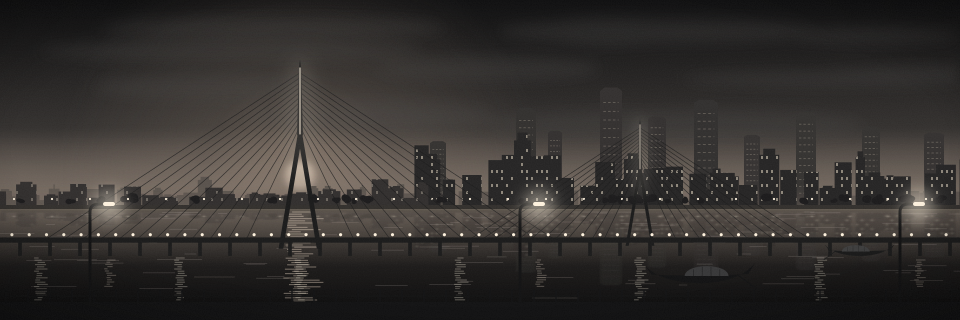
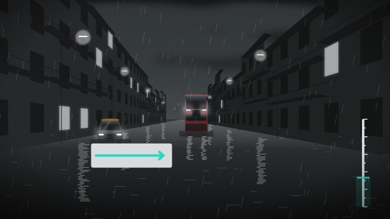
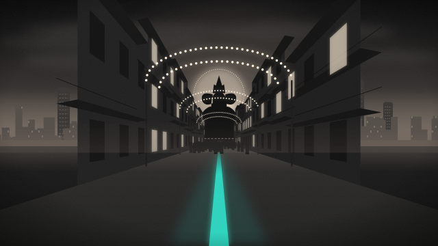
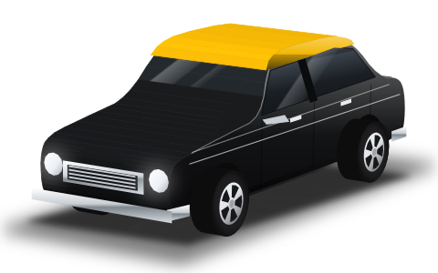

The tide line through the S.
Sajag (सजग) means alert, watchful, and what Mumbai must always watch is where the water stands: a heavy burst at high tide closes the outfalls and the city floods. A geometric S whose spine is one blue wave, the tide line, running out past both bowls: the top stroke dips into the water, the bottom stroke rises out of it. White on night, black on paper, currentColor in mono; the tide line is the only colour. At 32 px and below the solid mark (a heavier S, a thicker, flatter line) stands in.

Stacked (night, paper) · app icon 128 · mark 64 / 40 · solid 32 · favicon 32 / 16 · paper mark
Neutral black, white and grey; colour only for meaning: orange decide · red alert · green ok · teal route · blue #276EF1 links and AI. No yellow in the identity (the kaali-peeli keeps its yellow roof only in the vehicle artwork).
English first; the tagline in Marathi and Hindi comes from the packs when the reader picks them. Wordmark outlined from Inter 700 and, for सजग, Noto Sans Devanagari 700 (SIL OFL 1.1); interface type Inter and Noto Sans Devanagari.

Home scene · the Sea Link at dusk

Key art · waterlogging at high tide

Key art · visarjan lane, light gates

Studio shot · kaali-peeli Premier Padmini